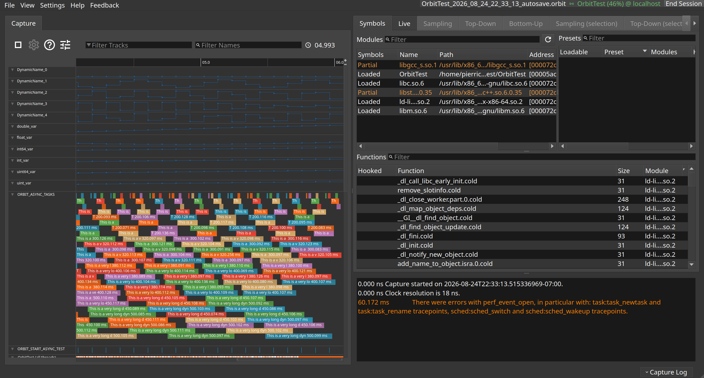
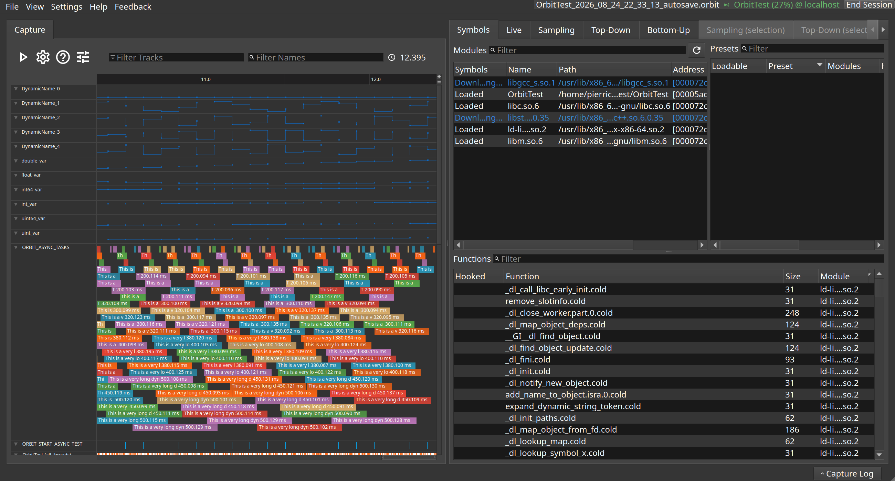

Taking a capture
One button starts and stops a capture; while it runs, the capture window fills in live.
The red button on the capture toolbar starts a capture and stops it again. The timer next to it counts the capture up, and the capture window draws events as they arrive rather than waiting for the end.
Stopping a capture is when the analysis tabs on the right become available: they all summarise a capture that has finished arriving.

